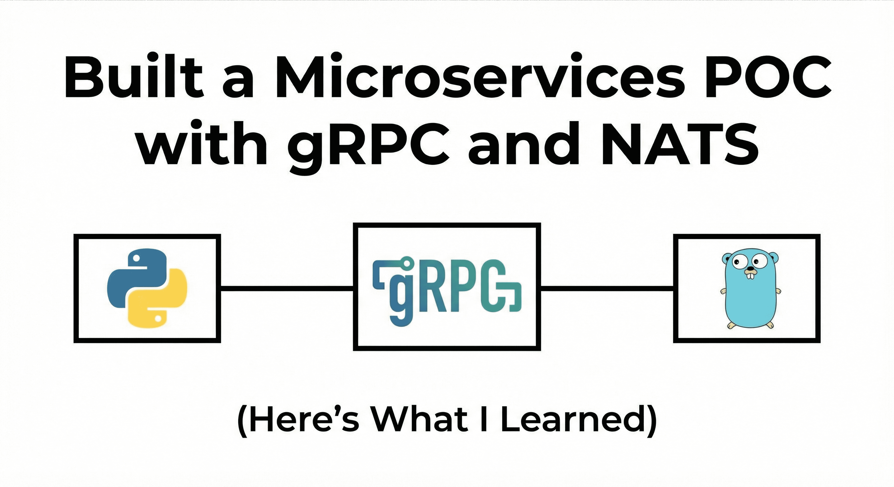

Exploring reality of building microservice architecture: A gRPC and NATS (complete POC)
Contents
What I learned building MicroBuf, a small gRPC + NATS experiment that taught me more than 6 months of reading Medium posts
Why I Built This #
I've been a backend engineer for about 18 months now. Most of my work has been on REST APIs—Node.js services talking to each other over HTTP, passing JSON back and forth. It works fine, but I kept hearing about gRPC, Protocol Buffers, and event-driven architectures in tech talks and blog posts.
The problem? I didn't really get it. I understood the concepts theoretically, but I couldn't answer basic questions like:
Why would I use gRPC instead of REST?
What does "schema-first" actually mean in practice?
How do you make services in different languages talk to each other reliably?
What's the difference between synchronous and asynchronous communication beyond "one waits, one doesn't"?
So I did what I always do when I'm confused: I built something.
I called it MicroBuf, a small proof-of-concept with three microservices using gRPC (for request-response), Protocol Buffers (for type-safe contracts), and NATS (for event streaming). Two services in Go, one in Python, all talking to each other like they're part of the same system.
This post is about what I learned. Not "here's how to build microservices" (there are plenty of those), but "here's what surprised me, what clicked, and what I'd do differently."
What I Built #
MicroBuf has three services:
User Service (Go): Creates and retrieves users. When you create a user, it saves it in memory and publishes a
USER_CREATEDevent.Post Service (Python): Creates posts for users. When you create a post, it publishes a
POST_CREATEDevent.Analytics Service (Go): Doesn't serve any requests. It just listens to all events and logs statistics—how many users created, how many posts, etc.
Clients (both Go and Python) can call User Service and Post Service over gRPC. Services communicate with each other through events on NATS.
Simple, right? But here's what made it interesting: the services are in different languages, they don't share any code, and they don't know about each other's implementation. They only share .proto files.
The First "Aha" Moment: Protobuf Isn't Just About Speed #
Everyone talks about Protobuf being faster than JSON. Smaller payloads, binary encoding, blah blah. That's true, but it's not why Protobuf matters.
Protobuf matters because it's a contract.
Here's what I mean. In my previous projects with REST APIs, the "contract" between services was... documentation. Maybe a Swagger file if we were disciplined. But nothing enforced it. If the backend changed a field from user_id to userId, the frontend would break at runtime.
With Protobuf, you define your contract in a .proto file:
message CreateUserRequest {
string name = 1;
string email = 2;
}
message UserResponse {
string user_id = 1;
string name = 2;
string email = 3;
int64 created_at = 4;
}
Then you run protoc (the Protobuf compiler) and it generates code for Go, Python, Java, whatever. The generated code is type-safe. If you try to pass a string where an int is expected, your code won't compile.
This was my first "aha" moment: the contract is enforced at compile time, not runtime.
No more "oops, I forgot to update the client." No more "the API returns a string but the docs say it's a number." If the contract changes, every service that depends on it knows immediately.
gRPC: It's Not REST, and That's the Point #
I spent the first day trying to understand gRPC by comparing it to REST. That was a mistake.
gRPC isn't "REST but faster." It's a completely different model.
With REST, you're thinking in resources and HTTP verbs: GET /users/123, POST /posts, etc. With gRPC, you're thinking in remote procedure calls—literally calling a function on another machine like it's local.
Here's what a gRPC call looks like in Go:
client := userpb.NewUserServiceClient(conn)
resp, err := client.CreateUser(ctx, &userpb.CreateUserRequest{
Name: "Alice",
Email: "alice@example.com",
})
It feels like calling a function. Because it is. The client doesn't know (or care) that this function is running on a different machine. It just calls it, gets a response, and moves on.
This is powerful for service-to-service communication. No need to think about HTTP methods, status codes, or URL paths. Just define your service in a .proto file and call methods.
But here's what surprised me: gRPC is terrible for debugging at first.
With REST, I can use curl or Postman. I can see the raw JSON. I can inspect headers. With gRPC, the data is binary. You need special tools like grpcurl or Postman's gRPC support. It took me a while to get comfortable with that.
Trade-off learned: gRPC is great for performance and type safety, but the developer experience takes some getting used to.
The Second "Aha" Moment: Events Change How You Think #
The most interesting part of MicroBuf wasn't gRPC—it was the event-driven layer.
Here's how it works: when User Service creates a user, it publishes an event to NATS:
event := &Event{
EventType: USER_CREATED,
UserId: userID,
Timestamp: time.Now().Unix(),
}
natsConn.Publish("events.user.created", marshal(event))
Analytics Service subscribes to all events:
natsConn.Subscribe("events.*", func(msg *nats.Msg) {
// Process event
})
User Service doesn't know Analytics Service exists. It just publishes the event and moves on. If Analytics is down, the event gets queued. If a new service wants to listen tomorrow, it just subscribes. No changes to User Service.
This was my second "aha" moment: events decouple services in time and space.
In my previous projects, if Service A needed to notify Service B, we'd make Service A call Service B's API. This creates coupling: Service A needs to know Service B's URL, handle retries if B is down, etc.
With events, Service A just says "this happened" and moves on. Who's listening? Not A's problem. This makes the system way more flexible.
But here's the trade-off: debugging is harder. With synchronous calls, if something breaks, you get an error immediately. With events, if Analytics Service has a bug, User Service doesn't know. The event gets published, but nothing happens. You need good logging and monitoring to catch these issues.
Why I Chose NATS Over Kafka #
Everyone uses Kafka, right? So why did I use NATS?
Honestly? Because Kafka scared me.
I looked at the setup—Zookeeper, brokers, partitions, consumer groups—and thought "I just want to publish events, not manage a distributed system."
NATS is a single binary. You run nats-server and you're done. No Zookeeper. No partition management. Pub/sub just works.
For a learning project, this was perfect. I could focus on the architecture, not the infrastructure.
That said, I know Kafka has features NATS doesn't—like guaranteed message ordering, long-term storage, and exactly-once delivery. If I were building a real production system with millions of events, I'd probably use Kafka.
But for learning? NATS was the right choice.
Things That Surprised Me #
1. Polyglot communication is easier than I thought
I expected mixing Go and Python to be painful. It wasn't. Once I had the .proto files, generating code for both languages was trivial. The Go client could call the Python service without knowing it was Python. The contract was the same.
2. Error handling is different with gRPC
In REST, you have HTTP status codes: 200, 404 error, 500, etc. In gRPC, you have status codes too, but they're different: OK, NOT_FOUND, INTERNAL, etc. It took me a while to learn the mapping.
3. Local development setup matters
I spent way too much time debugging import paths and module issues. Go's module system is powerful but confusing when you're generating code. I had to use replace directives in go.mod to make local protobuf packages work. This isn't a gRPC problem, it's a Go modules problem.
4. Graceful shutdown is harder than I thought
When you shut down a service, you need to:
Stop accepting new requests
Finish in-flight requests
Close gRPC connections cleanly
Close NATS connections
I didn't think about this at first. My services would just crash when I hit Ctrl+C. I had to learn about signal handling and graceful shutdown patterns.
What I'd Do Differently #
If I were building this again (or taking it to production), here's what I would love to change:
Add a database: Right now everything's in-memory. Production needs Postgres or similar. But the architecture wouldn't change, services would still communicate via gRPC and events.
Add authentication: No auth right now. In production, I'd add mTLS for service-to-service communication and JWT for clients.
Add observability: Logs are fine for learning, but production needs metrics (Prometheus), tracing (Jaeger), and proper alerting.
Use an API gateway: Right now clients call services directly. In production, I'd put an API gateway (like Envoy) in front to handle routing, auth, and rate limiting.
Add tests: I have zero tests. This is fine for a POC, but production needs unit tests, integration tests, and contract tests.
What I Learned About Learning #
Building MicroBuf taught me more than reading 10 blog posts about microservices. Here's why:
1. You remember what you struggle with: I spent hours debugging Go module paths. I'll never forget how replace directives work now.
2. You learn the trade-offs, not just the features: Blog posts say "gRPC is fast." Building it taught me "gRPC is fast but harder to debug."
3. You build intuition: I can now feel the difference between synchronous and asynchronous communication. I know when to use each. That's not something you get from reading.
Should You Build Something Like This? #
If you're a junior/mid-level engineer and you're curious about microservices, gRPC, or event-driven architecture, I'd say: yes, build something small.
Not because you'll use it in production, but because you'll learn patterns you can apply everywhere.
Here's my advice:
Start small: Three services, not ten. Focus on getting communication right.
Use multiple languages: It forces you to think about contracts, not implementation.
Deploy locally first: Docker Compose is fine. Kubernetes can wait.
Break things: Shut down a service mid-request. See what happens. That's how you learn resilience.
Don't over-engineer: No service mesh, no Kubernetes, no distributed tracing. Add complexity only when you need it.
What's Next for Me #
I'm planning to extend MicroBuf with:
A real database (probably Postgres)
Authentication (mTLS between services)
An API gateway (Envoy or a simple Go proxy)
Observability (OpenTelemetry for tracing)
Not because I need these features, but because I want to learn how they fit into the architecture.
That's the point of POCs: they're not about shipping features. They're about building mental models.
Originally published on Hashnode.